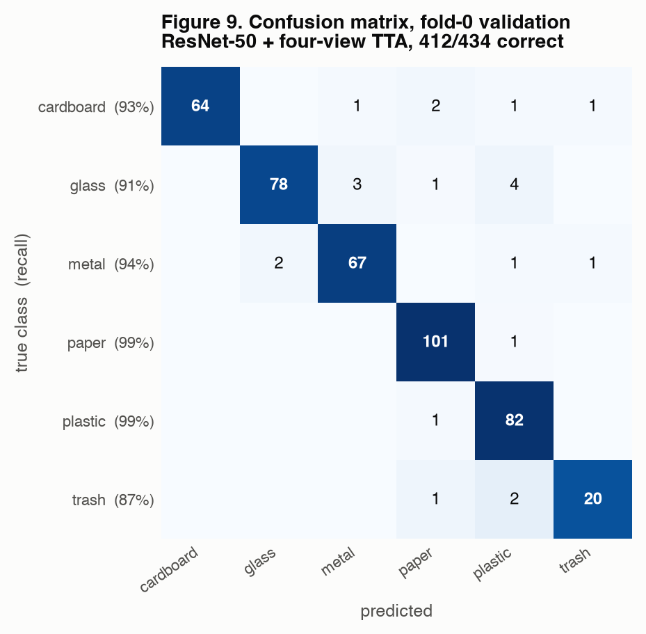
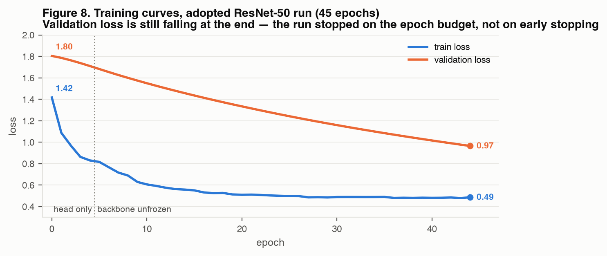

The project has two phases. Every measured number in this document comes from Phase 1: a ResNet-50 trained on the 2,527-image TrashNet corpus. That is the model currently deployed in the website and the only one that has been trained.
Phase 2 is a larger five-source corpus under a 30M-parameter competition cap. Its data pipeline is built and verified, but it has not been trained yet, so no accuracy figure exists for it. Where Phase 2 appears below it is labelled as planned, not measured.
There is a validation set, and it is separate from the test set. We use three partitions, not two, and the split is made by near-duplicate group rather than by image — see the note below, because this changes what the ratio means.
| Partition | Images | Share | Purpose |
|---|---|---|---|
| Fold-0 training | 1,732 | 68.5% | Gradient updates |
| Fold-0 validation | 434 | 17.2% | Model selection, early stopping |
| Test (quarantined) | 361 | 14.3% | Used exactly once |
| Total inventory | 2,527 | 100% |
The 2,166 non-test images carry a fold label 0–4, so the same data supports five-fold cross-validation; validation fold sizes are 434, 433, 433, 433 and 433. All reported single-run results use fold 0 as validation.
TrashNet contains many photographs of the same physical object. A random image-level split can put one view of a bottle in training and another view in validation, so the model scores by recognising the object rather than the material. We therefore detect near-duplicates — 64-bit perceptual hash at Hamming distance ≤ 6, plus ResNet-18 embedding cosine similarity ≥ 0.96 — merge them into groups with union-find, and assign groups to partitions using StratifiedGroupKFold. No group spans two partitions, which is asserted in code at every load.
| Partition | Images | Share |
|---|---|---|
| Train + validation (5 folds of 1,912) | 9,560 | 84.6% |
| Test (quarantined) | 1,739 | 15.4% |
| Total after filtering | 11,299 | 100% |
Augmentation is applied only to training images, and only after the split is decided — it lives inside the training dataset object, so an evaluation dataset structurally cannot receive it. Implemented in model/src/data.py.
| # | Operation | Parameters |
|---|---|---|
| 1 | RandomResizedCrop | size 224, scale (0.6, 1.0) |
| 2 | RandomHorizontalFlip | p = 0.5 |
| 3 | RandomRotation | ±15° |
| 4 | ColorJitter | brightness 0.2, contrast 0.2, saturation 0.2, hue 0.05 |
| 5 | ToTensor | — |
| 6 | Normalize | ImageNet mean (0.485, 0.456, 0.406), std (0.229, 0.224, 0.225) |
| 7 | RandomErasing | p = 0.0 in this config — present in code but inactive |
| # | Operation | Parameters |
|---|---|---|
| 1 | Resize | 255 (= 224 × 1.14, the standard 256/224 crop ratio) |
| 2 | CenterCrop | 224 |
| 3 | ToTensor | — |
| 4 | Normalize | ImageNet mean / std, as above |
Test-time augmentation (adopted). At inference the softmax is averaged over four deterministic views: (1) the standard eval transform; (2) the same with a horizontal flip; (3) the full image resized to 224 × 224 with no crop; (4) resize to 302 then centre-crop 224. This is the single change that passed our acceptance gate, worth +1.84 percentage points.
Other augmentation modes implemented but not used by the trained model: aug: modern replaces steps 1–4 with RandomResizedCrop + RandomHorizontalFlip + TrivialAugmentWide; Mixup and CutMix are wired up but set to 0.0; a per-class "boost" transform for minority classes exists and is disabled by default. The Phase 2 configs enable modern, mixup 0.2, cutmix 0.2 and random erasing 0.25, on the reasoning that these were marginal at 2.5k images and should pay off at four times the data.
ResNet-50, loaded through timm as resnet50.tv2_in1k (the torchvision IMAGENET1K_V2 weights). The 1000-class ImageNet classifier is replaced with a fresh 6-class linear layer; the convolutional trunk is unchanged. Measured parameter count: 23.5M, which is under the competition's 30M cap.
The intended final model is ConvNeXtV2 Tiny (convnextv2_tiny.fcmae_ft_in22k_in1k, 27.9M parameters). Three alternatives are configured and verified to build — CAFormer-S18 (24.3M), DINOv2 ViT-S/14 (22.1M), EfficientNetV2-S (20.2M) — but we do not plan to run them; see §V.4 for the reasoning. The cap is enforced in code: build_model counts parameters and raises before training starts, so an ineligible configuration fails in the first second rather than after hours.
ConvNeXtV2 Tiny is chosen as the safest option rather than the theoretically best one. It has strong pretrained features from FCMAE pre-training plus ImageNet-22k fine-tuning, it sits comfortably under the 30M cap with headroom, and it is a well-understood convolutional architecture that behaves predictably on a fixed budget. With only 13 hours of rented GPU time, reliability is worth more than the chance of a marginally better architecture.
Yes — ImageNet pre-trained weights, fine-tuned in two phases. No layer is permanently frozen.
| Phase | Epochs | Trainable | Learning rate |
|---|---|---|---|
| 1 — head only | 5 | Backbone frozen (requires_grad = False on every non-classifier parameter); only the new 6-class head trains |
head 1×10⁻³, constant |
| 2 — full fine-tune | 40 | Entire network unfrozen, in two parameter groups | backbone 1×10⁻⁵, head 1×10⁻³ (100× ratio) |
The head phase exists so the randomly initialised classifier does not send large, meaningless gradients back through pre-trained features on the first steps. The 100× discriminative learning-rate ratio in phase 2 is deliberate: in our experience on this dataset, too high a backbone learning rate is the single most common cause of a collapse from ~93% to ~75%.
| Setting | Value |
|---|---|
| Optimizer | AdamW |
| Initial learning rate | Head 1×10⁻³; backbone 1×10⁻⁵ (separate parameter groups) |
| LR scheduler | LambdaLR implementing 3-epoch linear warmup, then cosine decay across the 40 fine-tune epochs. Constant (×1.0) during the 5 head epochs. |
| Loss function | CrossEntropyLoss with label_smoothing = 0.1. No class weights in the loss — imbalance is handled by the sampler instead (see below). Validation loss uses plain CrossEntropyLoss with no smoothing, so it stays comparable across configs. |
| Batch size | 32 |
| Total epochs | 45 (5 head + 40 fine-tune). All 45 ran; early stopping was never triggered. |
| Weight decay | 0.05, applied to both parameter groups |
| Dropout | None added. ResNet-50 has no dropout layer, and we did not insert one — regularization comes from weight decay, label smoothing, augmentation and EMA. |
| Class imbalance | WeightedRandomSampler with inverse-frequency weights, so the 137-image trash class is replayed roughly 4× per epoch |
| EMA | Enabled, decay 0.9998 (see the note below — it did not help) |
| Early stopping | Patience 10 epochs on validation accuracy (not reached) |
| Mixed precision | Enabled (AMP) |
| Random seed | 42, set across Python, NumPy and PyTorch |
We kept an exponential moving average of the weights, which is normally a free improvement. Here it was not. The EMA weights reached 88.94% validation accuracy while the raw weights from the same run reached 93.09% — a 4.15-point gap in the wrong direction, most likely because the decay of 0.9998 averages over a horizon far longer than a 45-epoch run on 1,732 images. The adopted checkpoint is the raw one. This is the kind of default that is worth checking rather than assuming.
322 / 361 = 89.20% on the held-out TrashNet test set. Measured once, before the later tuning experiments, and never used for model selection. It is not the score of the final optimized model, and it cannot be re-measured — the test set is spent, and a guard file now blocks a second evaluation programmatically.
| Configuration | Accuracy | Correct | Macro-F1 | Status |
|---|---|---|---|---|
| ResNet-50, single view | 93.09% | 404/434 | 0.9196 | Starting point |
| ResNet-50 + 4-view TTA | 94.93% | 412/434 | 0.9414 | Adopted |
| Progressive resize 384px + TTA | 94.93% | 412/434 | 0.9442 | Rejected |
| Modern augmentation + TTA | 95.62% | 415/434 | 0.9421 | Rejected |
| Weight decay 0.10 + TTA | 94.70% | 411/434 | 0.9390 | Rejected |
| Test set, adopted model | 89.20% | 322/361 | — | Spent |
Three configurations that raised or held accuracy were rejected. We fixed an acceptance rule before running them: a change is adopted only if it gains at least seven validation images, loses no macro-F1, and costs no class more than five points of recall. Modern augmentation had the highest raw accuracy we ever measured and still failed, because trash recall fell from 20/23 to 18/23 — the model got worse at the class it was already worst at.
| Class | Precision | Recall | F1 | Support |
|---|---|---|---|---|
| cardboard | 1.0000 | 0.9275 | 0.9624 | 69 |
| glass | 0.9750 | 0.9070 | 0.9398 | 86 |
| metal | 0.9437 | 0.9437 | 0.9437 | 71 |
| paper | 0.9528 | 0.9902 | 0.9712 | 102 |
| plastic | 0.9011 | 0.9880 | 0.9425 | 83 |
| trash | 0.9091 | 0.8696 | 0.8889 | 23 |
| Macro average | 0.9469 | 0.9376 | 0.9414 | 434 |
| Weighted average | 0.9510 | 0.9493 | 0.9492 | 434 |

| Phase | Epochs | Training loss | Validation loss |
|---|---|---|---|
| Head only (backbone frozen) | 0–4 | 1.42 → 0.83 | 1.80 → 1.71 |
| Full fine-tune | 5–44 | 0.82 → 0.49 | 1.68 → 0.97 |
| Whole run | 45 | 1.42 → 0.49 | 1.80 → 0.97 |

Flask 3.1.3 (website/app.py), serving both the API and the frontend from one process. It calls the repository's real inference code — src.model, src.data, src.evaluate — rather than a reimplementation, so what the site serves is exactly what was evaluated.
| Component | Choice |
|---|---|
| Framework | Flask 3.1.3, built-in development server, 127.0.0.1:5001 by default |
| Inference | PyTorch 2.13.0 + timm 1.0.28; device selectable cpu / cuda / mps, default CPU |
| Endpoints | POST /api/identify — multipart file or base64 JSON, returns class, calibrated confidence, all six probabilities, an OOD flag and an attention bounding box.GET /api/model — served checkpoint, image size, device, calibration state. |
| Frontend | Static index.html + support.js, React 18 UMD vendored locally under website/vendor/ so the site runs with no network access |
| Model loading | Once at startup; accepts a single best.pth or an ensemble.json manifest |
The figures below were measured, not estimated: 12 real HTTP requests per mode against the running server after warm-up, plus 30 direct model calls, on the development machine (Apple Silicon, PyTorch 2.13.0, 4 threads).
| Mode | Median | Min | Max | Notes |
|---|---|---|---|---|
| Standard (1 view) | 46 ms | 44 ms | 50 ms | Default path |
| Accuracy mode (4-view TTA) | 120 ms | 113 ms | 137 ms | ~2.6× the work |
| Device | Single view | 4-view TTA |
|---|---|---|
| CPU (deployment default) | 19.4 ms | 60.2 ms |
| Apple GPU (MPS) | 8.2 ms | 24.3 ms |
The difference between Tables 9 and 10 — roughly 26 ms — is the honest cost of everything that is not the neural network: HTTP handling, JPEG decoding, the feature-space out-of-distribution comparison against a 2,166-embedding bank, and computing the class-activation bounding box.
Both modes are comfortably interactive; the standard path is well under the ~100 ms threshold at which a user perceives a response as instantaneous. Two caveats for honesty: this is the Flask development server, which handles one request at a time and is not a production deployment, and these timings are from the development machine rather than the presentation laptop.
While expanding the corpus we discovered that omasteam/waste-garbage-management-dataset silently contains TrashNet. Because our downloader collapses exact pixel duplicates, 2,218 of the 2,527 TrashNet images ended up stored under garbage_classification__*.jpg filenames — including all 361 images of our already-spent test set, 318 of them under the disguised names. Training on the corpus as downloaded would have meant training on 100% of the test set.
It was recoverable exactly. The import routine walked sorted(zip members), so each image's index is a deterministic function of its original filename; reconstructing that ordering and joining on the index matched 2,527 / 2,527 rows with complete label agreement. Every affected near-duplicate group is now forced into the test split, and an assertion re-checks it on every load.
| Difficulty | Resolution and lesson |
|---|---|
| Accuracy improved while the minority class got worse | Modern augmentation gained 3 images overall and lost 2 of 23 trash images. Per-class recall became part of the acceptance gate, not a post-hoc observation. |
| A guard that guarded nothing | Our documentation claimed a file "physically blocks re-running the final evaluation". Searching the source found no code reading it. Single-use evaluation is now genuinely enforced. A documented guarantee is not an implemented one. |
| Ignore rules that ignored nothing | .gitignore patterns were root-anchored and never matched the real directories, so files we believed were deliberately excluded simply were not. Verified afterwards with git check-ignore. |
| A test whose name overstated it | A unit test named for a fallback never reached that code path. It passed, and its name was false. A test name is a claim about coverage. |
| Confidence was not correctness | Label smoothing left the model badly under-confident. The NLL-optimal temperature (0.22) made some wrong answers look 95% certain, so we chose a conservative 0.65 instead. |
| The closed-set problem | A six-class softmax must assign a photo of a cat to one of six classes. Margin, entropy and energy guards all failed — one real bottle looked more uncertain than the cat. Replaced with feature-space nearest-neighbour distance (threshold 0.70). |
| Scaling the duplicate search | Pairwise similarity built dense (N, N) matrices — fine at N = 2,527, about 0.52 GB each at N = 11,359. Rewritten to process in row-blocks. |
| Cross-platform paths | Four sites serialised paths in a way that would emit backslashes on Windows and break the manifest joins — on the exact machine where training was to run. Found by inspection before it failed. |
Remote GPU time is limited to roughly 13 hours, which is the binding constraint on everything below. The plan is deliberately narrow: one strong ConvNeXtV2 Tiny model, trained well, rather than a broad comparison that produces four mediocre ones.
| Stage | Budget | Purpose |
|---|---|---|
| Setup, corpus download, split rebuild, preflight | 30–90 min | Must exit 0 before anything trains |
| GPU batch-size autotune | 5–15 min | Every later stage runs faster; pays for itself immediately |
| ConvNeXtV2 Tiny at 224px | 2–4 h | The primary model. A usable checkpoint exists from here on. |
| Progressive fine-tune at 384px | 3–6 h | Warm-started from the 224px checkpoint; historically the largest single gain |
| Spare capacity — one extra fold, or TTA and validation checks | remainder | Absorbs overruns; only used if the earlier stages finish early |
| Champion update, packaging, transfer | 15–30 min | Reserved, not optional |
| Total | ≈ 7–12 h | Leaves deliberate slack inside the 13-hour window |
Deliberately skipped, and why. Each of these is methodologically sound and does not fit the budget:
| Skipped | Reason |
|---|---|
| Four-model backbone bake-off | Would consume most of the budget selecting an architecture instead of training one properly. The three alternative configs stay in the repository for anyone with more time. |
| Full five-fold cross-validation | Five times the training cost. It will not fit safely, so results will be single-fold and must be reported as such. |
| Two-architecture ensemble | Requires the bake-off first. Also raises an interpretation question about the 30M cap that we would rather not depend on. |
| Additional datasets | Five sources are already configured and pinned; more would mean re-downloading and re-splitting. |
| Manual label-noise cleaning | Needs out-of-fold predictions across all five folds before the audit can even begin. |
Because five-fold training is being skipped, the Phase 2 number will be a single-fold validation result, not a mean with a standard deviation. It should be captioned that way. On a 1,912-image validation fold, a difference of under roughly 0.5 macro-F1 points is noise and should not be claimed as an improvement.
Provenance of these numbers. Accuracy, precision, recall, F1 and the loss trajectory are read from experiments.csv and the files under model/reports/. Split counts are recomputed from the committed CSVs. Hyperparameters are quoted from configs/baseline.yaml and the logged config_json. Latency was measured on 22 July 2026 against the running server. Figures are generated by model/paper/make_figures.py. Nothing in this document is a recalled or estimated value.